Maxime Leclerc.
Ingénierie mécanique
au service du spatial.
Élève-ingénieur généraliste, me spécialisant en mécanique du vol et aérodynamique, formé à Centrale Méditerranée et ayant effectué des stages au CNES, chez ArianeGroup et à l'University of Oslo. À la recherche d'un stage de fin d'études (avril – septembre 2027, 6 mois) dans le secteur spatial.
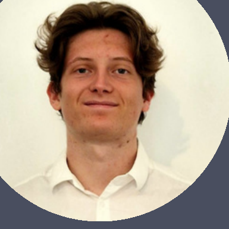
Trajectoire — 2024 → 2026
Altitude relative — implication techniqueExpériences en entreprise
et en laboratoire
Quatre stages successifs, du commerce à l'ingénierie spatiale, construits autour d'une même rigueur de méthode.
— en cours
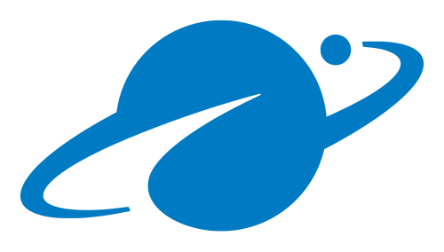
- Développement d'outils de business intelligence pour la direction industrielle.
- Constitution d'une base de données réunissant les moyens de production, de manutention et de contrôle de plusieurs unités ArianeGroup (dimensions, capacités, timbrages).
- Conception d'une interface de vérification de faisabilité de fabrication à partir des dimensions d'un produit.
- Validation du fonctionnement de l'outil sur des cas-école.
— Fév. 2026
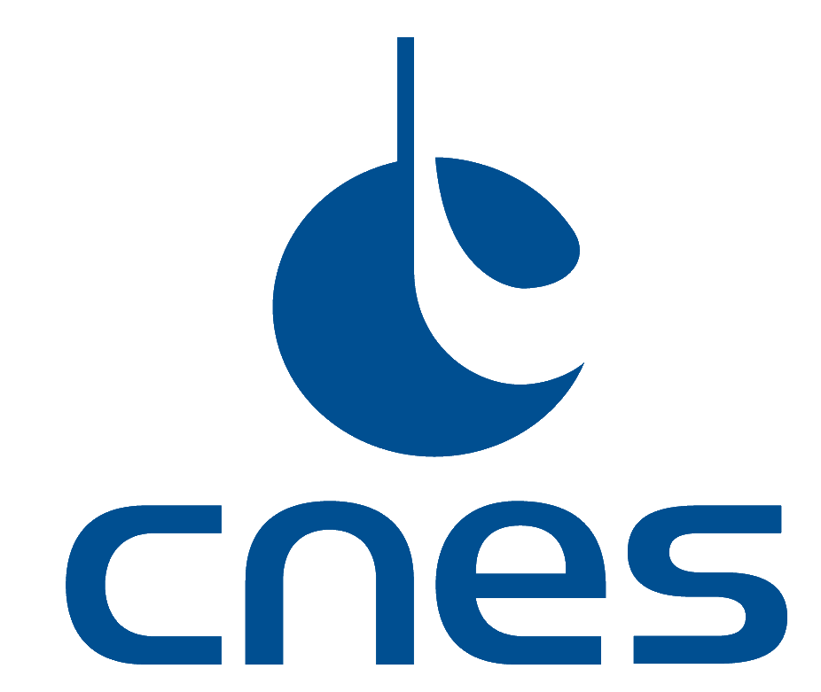
- Pilotage de projet de bout en bout, du cahier des charges au déploiement.
- Développement d'un prototype fonctionnel de gestion et de partage des connaissances.
- Interfaçage avec les équipes pour structurer la base de connaissances COMET.
— Juil. 2025
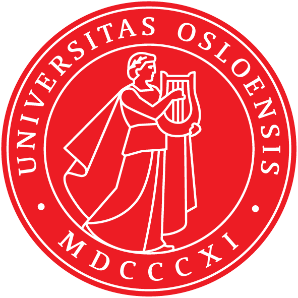
- Expérience de recherche internationale en mécanique des fluides, en bassin à houle.
- Conception d'une chaîne complète de traitement de signal : nettoyage, filtrage, analyse de Fourier, séparation onde incidente / réfléchie.
- Développement en Python d'une bibliothèque de seize programmes interconnectés (voir projet « Analyse de bassin à houle »).
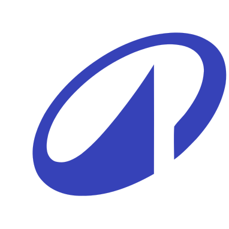
- Développement du sens du service client et du travail en équipe.
- Découverte du fonctionnement opérationnel d'une grande enseigne.
Python, simulation
et intelligence artificielle
Des projets développés en autonomie, du solveur logique aux réseaux de neurones évolutionnaires, en passant par le traitement de signal scientifique.
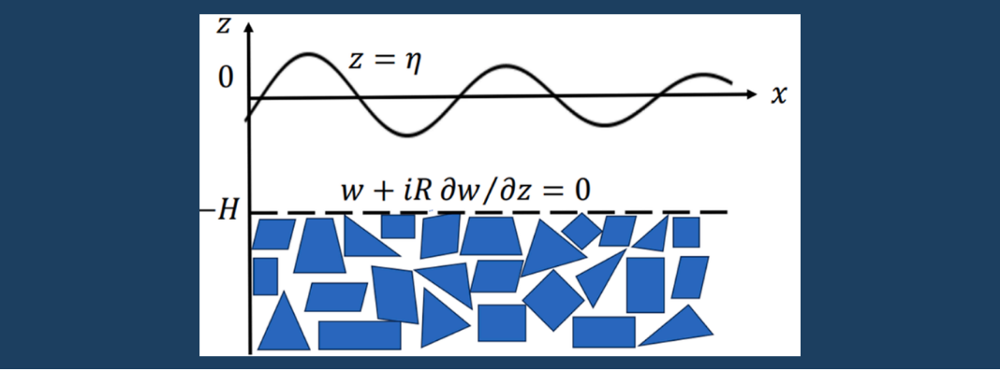
FIG. 01Analyse de bassin à houle
Chaîne complète de traitement du signal pour quatre sondes de houle : nettoyage des données, filtrage, FFT, séparation onde incidente / réfléchie et interface de visualisation Tkinter. Développé pendant le stage de recherche à l'UiO.
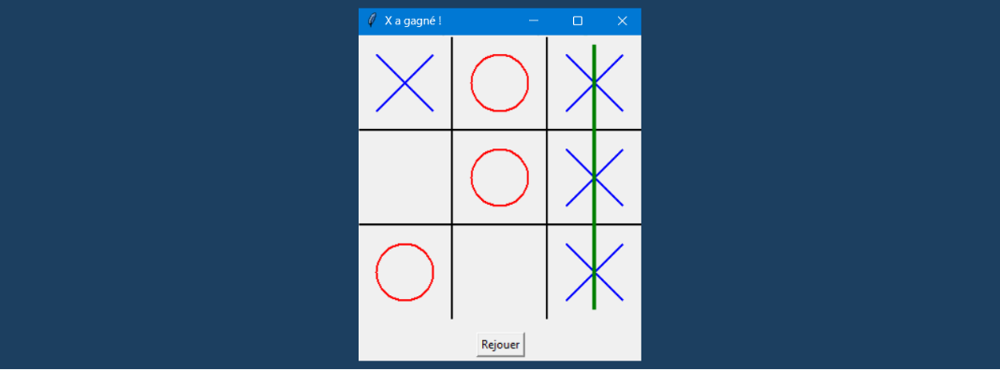
FIG. 03Morpion — IA par Q-learning
Un agent de morpion entraîné par reinforcement learning (Q-learning), via deux Q-tables distinctes (X et O) apprises sur des centaines de milliers de parties en self-play. L'IA, une fois entraînée, est jouable face à un humain grâce à une interface graphique Tkinter.
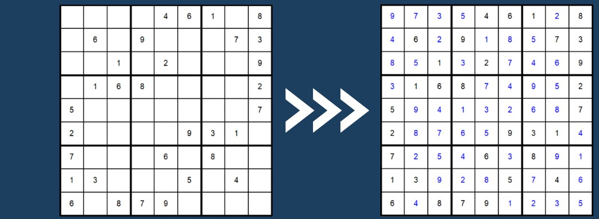
FIG. 03Solveur de Sudoku logique
Solveur appliquant des techniques de résolution humaines (singles cachés en ligne, colonne et carré, alignements de candidats) plutôt que du backtracking brut, avec rendu graphique de la grille via Turtle.
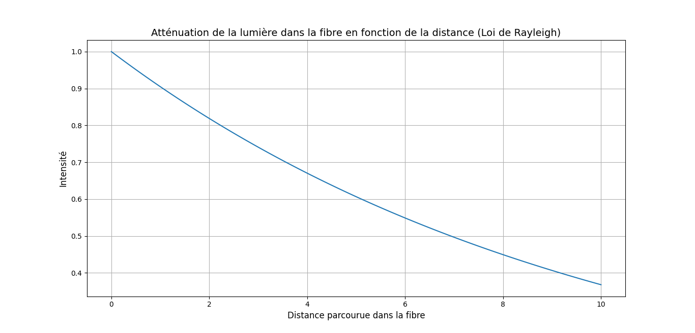
FIG. 04Simulations physiques d'ondes
Série de scripts de modélisation : propagation et atténuation de la lumière en fibre optique (loi de Rayleigh), et résolution géométrique de l'intersection de deux courbures par dichotomie.
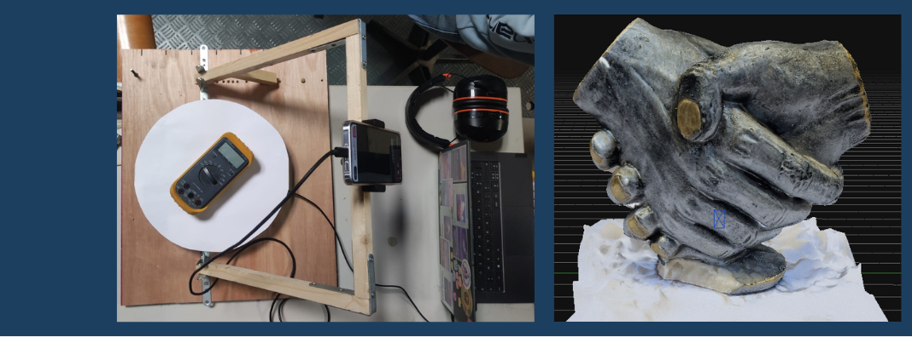
FIG. 05Automatisation de capture photogrammétrique
Script pilotant une webcam IP et un plateau rotatif pour automatiser la capture de séries de photos en vue d'une modélisation 3D, avec guidage interactif de l'utilisateur et retour sonore.
Cinétique de désorption thermique
Résolution numérique d'équations différentielles (ODE) modélisant la désorption d'un gaz en fonction de la température, comparée à des données expérimentales — exercice inspiré de la physique des matériaux pour fusion (type ITER).
Outils, méthodes
et langues
Une boîte à outils construite à l'école, en stage et sur des projets personnels.
- Python
- Matlab / Simulink
- JavaScript
- NumPy · SciPy · Pandas
- Matplotlib
- Pack Office
- Gestion de projet
- Travail collaboratif
- Esprit d'analyse
- Français — langue maternelle
- Anglais — courant (Australie 3 ans, Norvège 6 mois)
Parcours académique
Filière généraliste, spécialisation mécanique du vol et aérodynamique.
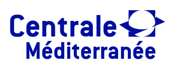
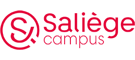
Engagement étudiant
Vice-trésorier — Bureau des Sports
Gestion d'un budget de 200 000 € avec le trésorier. Suivi administratif et financier de l'ensemble des activités sportives de l'école (jan. 2024 — jan. 2025).
Responsable activités — Massilia Sun Ball
Organisation d'un tournoi étudiant réunissant plus de 1 500 participants. Coordination d'équipes et planification logistique de l'événement (nov. 2023 — nov. 2024).
Construisons la suite
de mon parcours.
Je recherche un stage de fin d'études de 6 mois, d'avril à septembre 2027, dans le secteur spatial. N'hésitez pas à me contacter directement.
- LocalisationToulouse, FR
- DisponibilitéAvril 2027
- Durée6 mois
- PermisPermis B
- Secteur viséSpatial